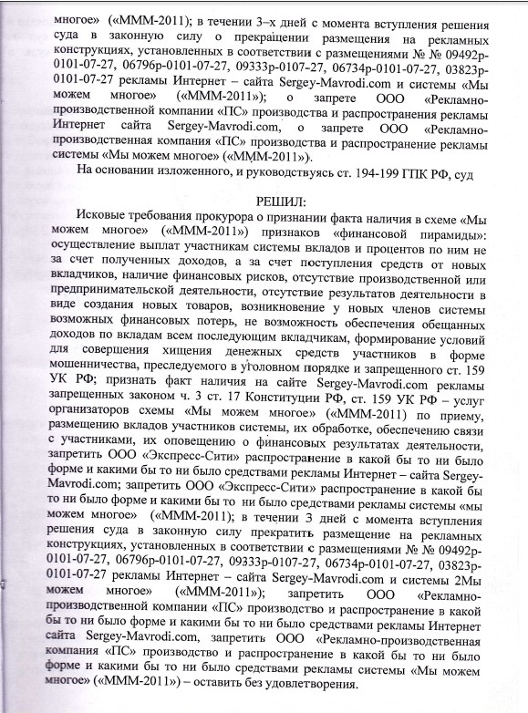
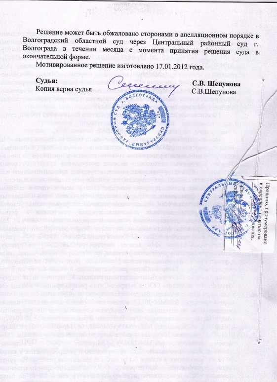
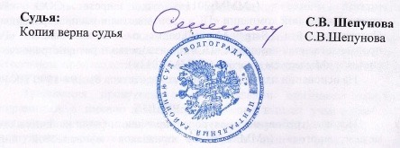

Регистрация в телеграм-боте
Вернуться в раздел "МММ 2.0 ЗАКОННА"

Поскольку наша Система Взаимопомощи имени Сергея Мавроди целиком и полностью по своей сути и концепции ("правилам") является полной копией МММ-2011 (неспроста, в общем-то), то это решение волгоградского суда имеет полную юридическую силу и прекрасно действует в отношении Нас. Далее по тексту МММ-2011 Вы можете смело менять на Возрожденную МММ или на Систему Взаимопомощи имени Сергея Мавроди.
Фотографии самого решения ЗДЕСЬ и ЗДЕСЬ
Суд Решил: Исковые требования прокурора о признании факта наличия в схеме «Мы можем многое» («МММ-2011″) признаков «финансовой пирамиды»: осуществление выплат участникам системы вкладов и процентов по ним не за счет полученных доходов, а за счет поступления средств от новых вкладчиков, наличие финансовых рисков, отсутствие производственной или предпринимательской деятельности, отсутствие результатов деятельности в виде создания новых товаров, возникновение у новых членов системы возможных финансовых потерь, не возможность обеспечения обещанных доходов по вкладам всем последующим вкладчикам, формирование условий для совершения хищения денежных средств участников в форме мошенничества, преследуемого в уголовном порядке и запрещённого ст. 159 УК РФ; признать факт наличия на сайте Sergey-Mavrodi.com рекламы запрещённых законом ч. 3 ст. 17 Конституции РФ, ст. 159 УК РФ — услуг организаторов схемы «Мы можем многое» ("МММ-2011") по приему , размещению вкладов участников системы, их обработке, обеспечению связи с участниками, их оповещению о финансовых результатах деятельности, запретить ООО «Экспресс-Сити» распространение в какой бы то ни было форме и какими бы то ни было средствами рекламы Интернет — сайта Sergey-mavrodi.com; запретить ООО «Экспресс-Сити» распространение в какой бы то ни было форме и какими бы то ни было средствами рекламы системы «Мы можем многое» ("МММ-2011″); в течении 3 дней с момента вступления решения суда в законную силу прекратить размещение на рекламных конструкциях, установленных в соответствии с размещениями «№-размещения» <…> рекламы Интернет — сайта Sergey-Mavrodi.com и системы «Мы можем многое» ("МММ-2011″); запретить ООО «Рекламно-производственная компания» «ПС» производство и распространение в какой бы то ни было форме и какими бы то ни было средствами рекламы Интернет сайте Sergey-Mavrodi.com, запретить ООО «Рекламно-производственная компания» «ПС» производство и распространение в какой бы то ни было форме и какими бы то ни было средствами рекламы системы «Мы можем многое» ("МММ-2011″) - оставить без удовлетворения.



Вывод: МММ-2011 -- не имела признаков "финансовой пирамиды" и на этот счет есть решение суда, которое действует на всей территории РФ. Значит, и наша деятельность не имеет таких признаков! А значит, ни под какую статью наша "деятельность" не подпадает и подпадать не может в принципе!! Ибо что незаконного (и плохого?!) может быть в том, что люди добровольно оказывают друг другу безвозмездную финансовую помощь!?
P.S. Любопытный комментарий участника МММ-2011. МММ-2011, повторяю, можете смело заменять на Систему Взаимопомощи имени Сергея Мавроди:
"МММ-2011 не существует в природе, это просто сочетание букв и цифр. Это просто идея. Таким образом, нельзя никого привлечь к ответственности по закону, так как МММ-2011 находится вне закона. В СМИ кричат: МММ-2011 вне закона! Как бы намекая на то, что такая деятельность не законна, однако это введение в заблуждение. Вне закона означает лишь то, что МММ-2011 находится вне границ действия законов и правил и фактически не досягаема для судов и органов власти. Этому подтверждение выигранное дело в суде Волгоградской области, МММ-2011 признана законной".
Комментарий Сергея Мавроди:
P.P.S. Кстати. Насчёт преюдиции. А то интересуются. Ст.90 УПК РФ. Можете почитать. Решение волгоградского суда действует на всей территории России. Отныне никто в России -- ни премьер, ни президент, никто! -- не вправе подвергать сомнению тот факт, что МММ -- законна. И если вас куда-то вызовут (ну, вдруг! :-)), говорите смело: "Да, я участник МММ-2011!" И тыкайте им решение суда. :-))
P.P.P.S. И ещё. Предыстория конфликта. А то некоторые уже пишут, что это-де только про рекламу!.. Ничего подобного. Почитайте внимательно претензии прокуратуры. "Нельзя бесконечно гоняться за новыми сайтами, – пояснил господин Расстрыгин (прокурор Центрального района Волгограда). – Это как минимум непродуктивно. Поэтому сейчас мы требуем признать незаконным саму рекламируемую систему".
P.P.P.P.S. Юридическое заключение по возрожденной МММ: ВСЁ ЗАКОННО!
Вернуться в раздел "МММ 2.0 ЗАКОННА"
Регистрация в телеграм-боте